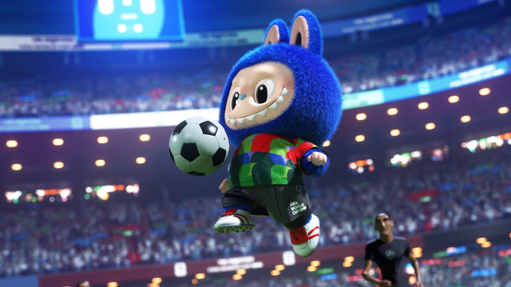
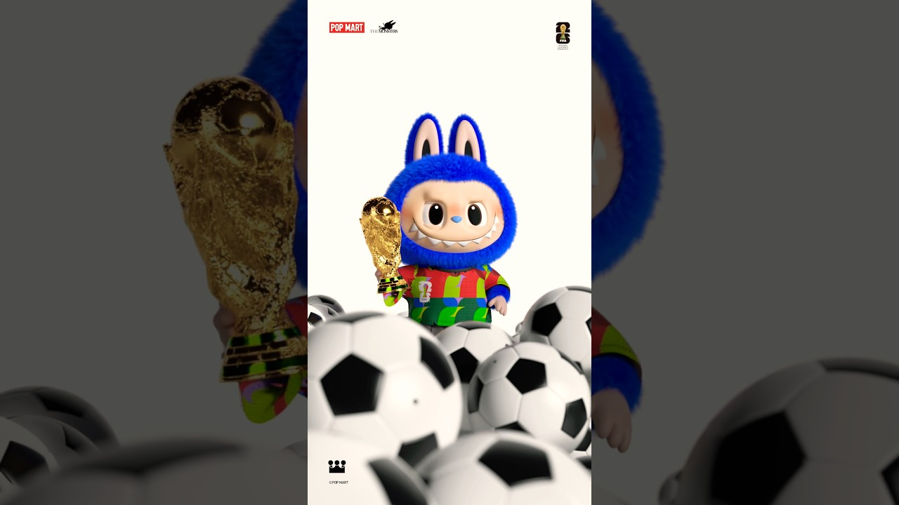
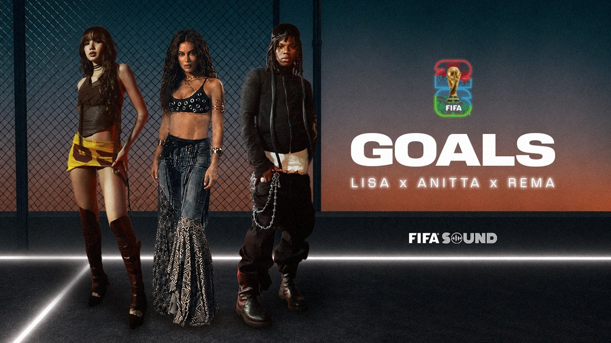

案例发生了什么



泡泡玛特没有把 FIFA 授权停在“给 LABUBU 换一件球衣”。3 月先由官方预告与发布片把 LABUBU 写成会控球、会举杯的足球角色，4 月 2 日在海外官网推出 Catch the Win 毛绒公仔、挂件、足球迷你包、玻璃杯、开瓶器冰箱贴、吊灯与挂绳等商品；5 月又让角色进入 LISA、Anitta、Rema 演唱的 FIFA 官方歌曲《GOALS》MV。6 月 11 日，两个穿定制球衣的 LABUBU 进一步走上墨西哥城世界杯开幕式草坪，把“可购买的授权商品”升级为全球观众共同目击的文化事件。
MARKETING KNOWLEDGE ROUTER · 营销知识路由器
营销启发卡
用三张卡片保留最值得记住、讨论和迁移的部分。 卡片底部按主题连接全站相关案例、经典方法与深度文章。
核心动作
先用官方预告与发布片赋予 LABUBU 控球、举杯和庆祝等角色动作，让 IP 与足球发生叙事关系，而不是只叠加赛事标识；围绕公仔、挂件、包、杯、冰箱贴与小灯等不同价格和使用场景建立商品矩阵，让收藏、穿戴和日常用品同时承接授权。
传播与商业机制
以“FIFA 官方授权 / 原创 IP / 内容与零售”为资源起点，进入球星/球队/授权内容、电商、门店、大小屏与海外渠道；结果优先观察搜索、到店、商品成交、会员沉淀与重点海外市场认知，不把曝光直接等同于销售。
可复用的方法
成熟原创 IP 使用体育授权时，最有价值的不是“被赛事盖章”，而是把商品、内容和现场编排成角色不断升级的连续剧情：先能买，再能看，最后成为大赛本身的一部分。
适用条件、风险与证据
- 先明确目标是国内动销、出海认知、渠道关系还是授权商品，而不是全部都做。
- 球星或球队的赛果只是放大器，必须准备常态内容和转化出口。
- 对授权范围、地域、肖像和商品库存建立可追溯台账。
核验记录可将已核动作作为内部判断基础；涉及投放规模、销售结果或合作细则时，仍应以品牌、平台或权利方的一手发布为准。 当前记录：已核（POP MART 官网与官方账号 + FIFA）；素材状态：已归档 4 张开幕式、官方发布片与 FIFA 内容物料。
品牌与权威来源物料
这里只展示可追溯到品牌、权利方、官方账号或明确注明原始出处的真实物料；研究图卡不计入案例图片。

资料与来源
官方资料、结果数据与下一步
已验证事实
- POP MART 官方 YouTube 于 2026 年 3 月 24 日发布 THE MONSTERS × FIFA 预告，3 月 27 日发布完整产品片；两条内容都让 LABUBU 以控球、举杯等动作进入足球叙事。
- POP MART 美国官网写明 THE MONSTERS × FIFA 系列于 4 月 2 日 19:00（PST）上线，并列出 Catch the Win 毛绒公仔、毛绒挂件、足球迷你包、玻璃杯、开瓶器冰箱贴、迷你吊灯和挂绳等商品。
- FIFA 官方页面确认《GOALS》是 2026 世界杯官方专辑歌曲，由 LISA、Anitta 与 Rema 演唱；POP MART 官方账号确认 LABUBU 在该官方 MV 中惊喜出镜。
- 6 月 11 日，泡泡玛特官方账号确认两个身穿定制球衣的 LABUBU 进入墨西哥城世界杯开幕式并在场内举杯；官方帖同时注明现场视频来自小红书用户“蓝大雨”。
可追溯的结果
- 截至本次归档时，POP MART 官方 YouTube 发布片与预告片的搜索快照分别约为 9.87 万和 6.36 万次播放；这是单平台动态快照，不能代表全球去重触达或购买转化。
- 官方商品页可以核验发售时间、商品款式、尺寸和标价，但未披露各地区首发库存、售罄速度、退款率、联名收入或新增消费者结构。
- 泡泡玛特相关人员称开幕式触达超过 10 亿观众，但目前未取得 FIFA 或转播测量机构对 LABUBU 实际可见时长和去重触达的独立拆分，因此不把该数字作为已审计结果。
原始来源
- POP MART 美国官网 · 2026-04-02THE MONSTERS × FIFA 官方系列与商品集合
- POP MART 美国官网 · 2026-04-02Catch the Win Vinyl Plush Doll 官方商品页
- POP MART · 2026-03-24THE MONSTERS × FIFA Series 官方预告片
- POP MART · 2026-03-27Catch the Win Vinyl Plush Doll 官方发布片
- FIFA · 2026-05-21Goals by LISA, Anitta and Rema
- POP MART 官方 LinkedIn · 2026-06-11LABUBU 亮相墨西哥城世界杯开幕式
来源链接优先指向品牌、权利方或持权媒体官方页面；品牌自述数据按原始定义记录，不视作独立审计结果。